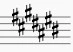

После подробного изучения понятия «Лад» можно смело приступать к изучению понятия «Тональность». После прочтения этой статьи у Вас не должно возникнуть проблем с игрой абсолютно любых гамм.
Напомним, что поступенно восходящее или нисходящее мелодическое движение звукоряда лада в пределах не менее октавы называется гамма.
Как мы выяснили, лад – это звукоряд, состоящий из устойчивых (I, III, V) и неустойчивых ступеней (II, IV, VI, VII).
В профессиональной европейской музыке XVII-XIX вв., и, отчасти, XX века – наиболее часто используются два лада – натуральный мажор и натуральный минор. Первая ступень мажорного и минорного лада называется тоника, она является центром, к которому тяготеют все остальные ступени и аккорды лада.
Например, если мы построим от ноты фа мажорный и минорный лад (опираясь на тоновое строение этих ладов), то получим тональность Фа мажор и фа минор.
Примечание: строение мажорного лада: тон – тон – полутон – тон – тон – тон – полутон. Строение минорного лада: тон – полутон – тон – тон – полутон – тон – тон.
Таким образом, тональность – определённое высотное положение мажорного или минорного лада в музыкальной системе. Каждый лад имеет двенадцать высотных положений, то есть двенадцать тональностей (12-ть мажорных и 12-ть минорных). Так как расстояние между клавишами неодинаковое, то для ступеней тональностей необходимы знаки альтерации (знаки повышения – диезы, и знаки понижения – бемоли). За каждой тональностью закреплены свои постоянные знаки альтерации. Как правило, они выставляются при ключе (скрипичном, басовом, теноровом etc.) и называются ключевыми знаками.
Например, если мы построим от ноты до минорную гамму, то нам необходимо будет применить три бемоля – си-бемоль, ми-бемоль и ля-бемоль (Рис. 1). А если решим построить от звука ля мажорную гамму, то нам необходимо будет использовать три диеза: фа-диез, до-диез и соль-диез (Рис. 2).
Рис. 1. Тональность до минор.
Рис. 2. Тональность Ля мажор.
На белых клавишах можно построить только одну мажорную тональность – До мажор, и только одну минорную – ля минор. В этих тональностях отсутствуют ключевые знаки. Между собой эти тональности будут называться параллельными, так как их ступеневый состав и количество ключевых знаков совпадает. В мажоре параллельная тональность находится на VI ступени, в миноре на III.
Существует ещё одно определение мажорного и минорного лада, которое опирается на одновременное звучание трёх устойчивых ступеней (I-III-V), которые образуют аккорд – трезвучие. В мажорной тональности образуется большое трезвучие (Б53), в минорной – малое (М53). Об этих аккордах читайте в разделе «Аккорды: трезвучия».
Если мы начнём строить от звука до и от звука ля вверх чистые квинты (ч.5), а от этих звуков мажорные и, соответственно, минорные гаммы, то получим семь мажорных и семь минорных диезных тональностей. В каждой последующей тональности будет прибавляться по одному ключевому знаку (диезу), начиная с фа-диеза.
Таблица диезных тональностей (параллельных между собой)
| До-диез мажор |  | ля-диез минор | ||
| Фа-диез мажор | ч.5 ↑ | ч.5 ↑ | ре-диез минор | |
| Си мажор | ч.5 ↑ | ч.5 ↑ | соль-диез минор | |
| Ми мажор | ч.5 ↑ | ч.5 ↑ | до-диез минор | |
| Ля мажор | ч.5 ↑ | ч.5 ↑ | фа-диез минор | |
| Ре мажор | ч.5 ↑ | ч.5 ↑ | си минор | |
| Соль мажор | ч.5 ↑ | ч.5 ↑ | ми минор | |
| До мажор | ч.5 ↑ | ч.5 ↑ | ля минор |
Порядок появления диезов в тональностях следующий фа – до – соль – ре – ля – ми – си (обратим внимание, что он также строится по чистым квинтам (ч.5) вверх от фа-диеза), см. Рис.3.
Рис.3. Порядок и правильное написание ключевых знаков в диезных тональностях.
Если же от звука до и ля строить вниз чистые квинты (ч.5), то мы получим семь тоник мажорных и семь тоник минорных бемольных тональностей. В каждой тональности будет прибавляться по одному бемолю, начиная с си-бемоля.
Таблица бемольных тональностей (параллельных между собой)
| До мажор | ч.5↓ | ч.5↓ | ля минор | |
| Фа мажор | ч.5↓ | ч.5↓ | ре минор | |
| Си-бемоль мажор | ч.5↓ | ч.5↓ | соль минор | |
| Ми-бемоль мажор | ч.5↓ | ч.5↓ | до минор | |
| Ля-бемоль мажор | ч.5↓ | ч.5↓ | фа минор | |
| Ре-бемоль мажор | ч.5↓ | ч.5↓ | си-бемоль минор | |
| Соль-бемоль мажор | ч.5↓ | ч.5↓ | ми-бемоль минор | |
| До-бемоль мажор | ля-бемоль минор |
Порядок появления бемолей в тональностях следующий си – ми – ля – ре – соль – до – фа (по чистым квинтам (ч.5) вниз от ноты си-бемоль), см. Рис.4.
Рис.4. Порядок и правильное написание ключевых знаков в бемольных тональностях.
Примечание: Секрет быстрого запоминания знаков в гаммах: в диезной мажорной тональности каждый новый знак находится на седьмой ступени. Зная порядок диезов не составит труда посчитать количество. В Ля мажоре VII ступень – соль, значит в этой тональности три диеза: фа-до-соль. В тональности До-диез мажор VII ступень – си, значит в этой тональности семь диезов: фа-до-соль-ре-ля-ми-си. Каждый новый бемоль в мажорных тональностях появляется на IV ступени. Так, например, в тональности Ля-бемоль мажор IV ступень – ре, значит в этой гамме четыре бемоля: си-ми-ля-ре. Помня о параллельных тональностях Вы с лёгкостью определите количество знаков в минорных гаммах.
Три вида мажорного и минорного лада
Мажорный и минорный лад имеют разновидности: натуральный вид, гармонический вид и мелодический вид. Натуральный мажор и минор мы рассматривали в разделе «Тональность».
В гармоническом мажоре VI ступень понижается на полтона (см. Рис.5).
Примечание: Если надо понизить бемоль, то необходимо использовать знак дубль-бемоля (дважды-понижение, обозначается как ♭♭), если необходимо понизить диез, то необходимо использовать знак альтерации бекар (знак отмены, обозначается как ). Чтобы повысить диез, используется знак дубль-диез (дважды-повышение, обозначается как ), чтобы повысить бемоль, необходимо использовать бекар.
Рис.5. Ре мажор гармонического вида (гармонический Ре мажор).
Примечание: Пониженную и повышенную ступень мы обозначаем плюсом (+) или минусом (–), встречаются также обозначения, когда возле ступени ставят ♭ или #, а также буквы «в» или «н».
Рис.6. Гармонический си-бемоль минор.
В мелодическом мажоре VI и VII ступени понижаются на полтона (см. Рис.7).
Рис.7. Мелодический Ре-бемоль мажор.
В мелодическом миноре VI и VII ступени повышаются на полтона (см. Рис.8).
Рис.8. Мелодический соль-диез минор.
В отличие от натурального мажора и минора, у которых есть постоянные ключевые знаки, знаки, встречающиеся в гармоническом и мелодическом виде, будут называться случайными альтерационными знаками.
Применение этих видов мажорного и минорного лада является следствием развития ладовой системы в целях её большего разнообразия.